インフラ保守
月額 3,000円
サーバー・SSL・ドメイン管理（更新・建て替え費用込み）
「1サイト分の予算」でターゲットごとの
表示切換え機能を実現します。
高額なツールも、
複数サイトの制作も不要。
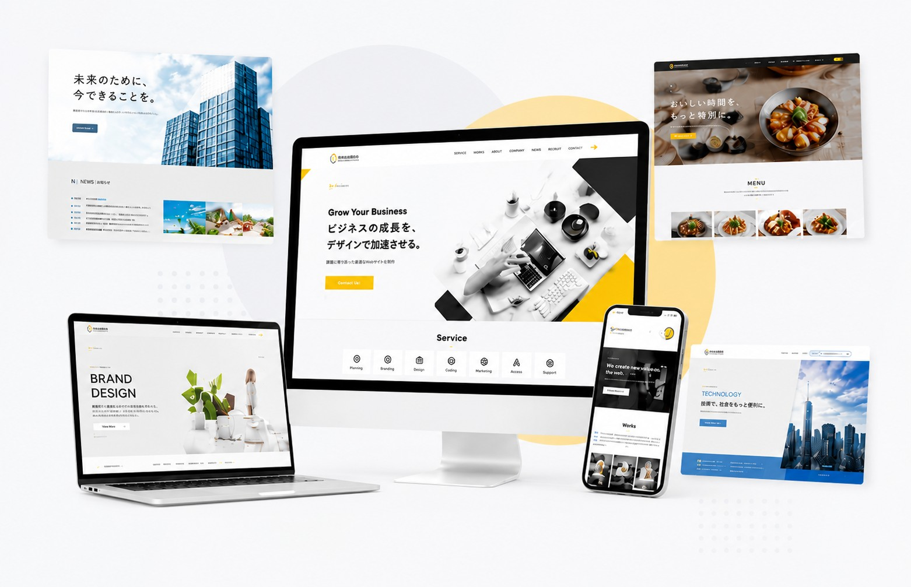
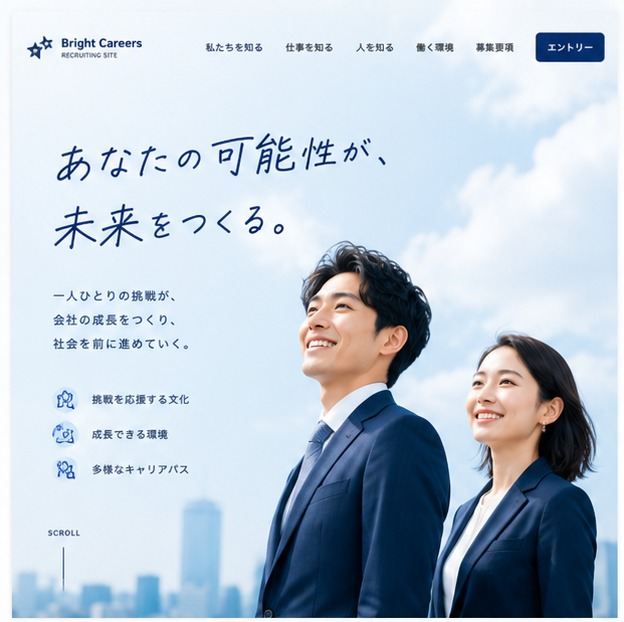
新卒向けの明るいコピーと写真だけで、経験者が「若手向けの会社なんだな」と離脱してしまう。
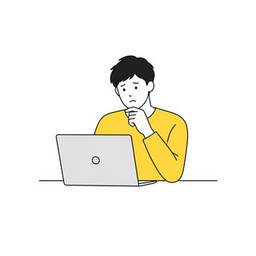
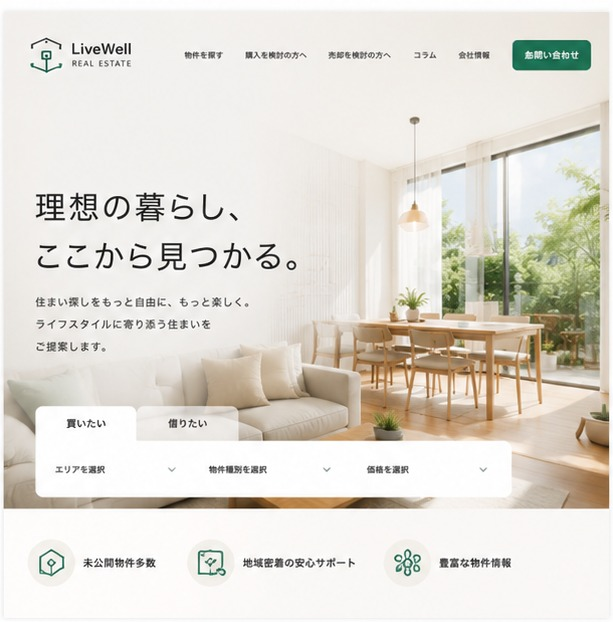
ファミリー向けの写真ばかりで、単身者や投資家が「自分向けじゃない」と感じて他社に流れる。
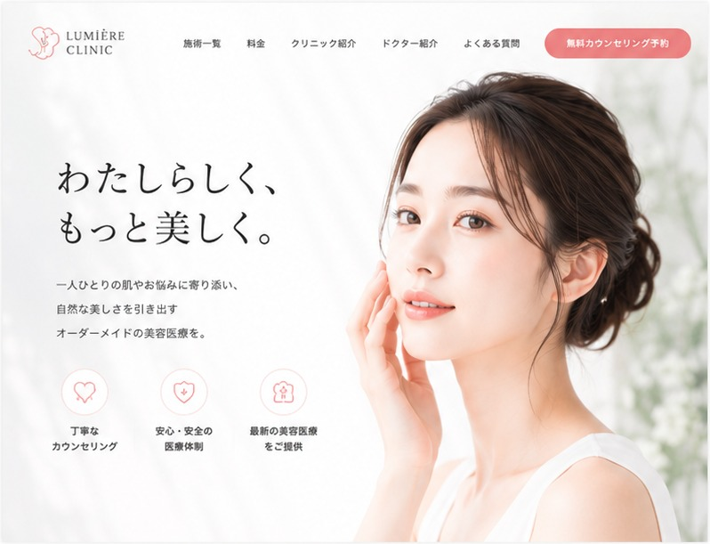
20代の予防美容の訴求だけで、40代以降の「本格的な施術を検討している人」の心をつかめない。
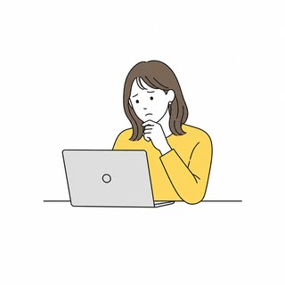
「ターゲットごとに見せ方を変えたい」。
そう思っても、これまでは『複数の専用サイトを作る』か『高額なツールを入れる』しかなく、
予算の都合で『広く浅い無難な1つのサイト』で妥協するしかありませんでした。
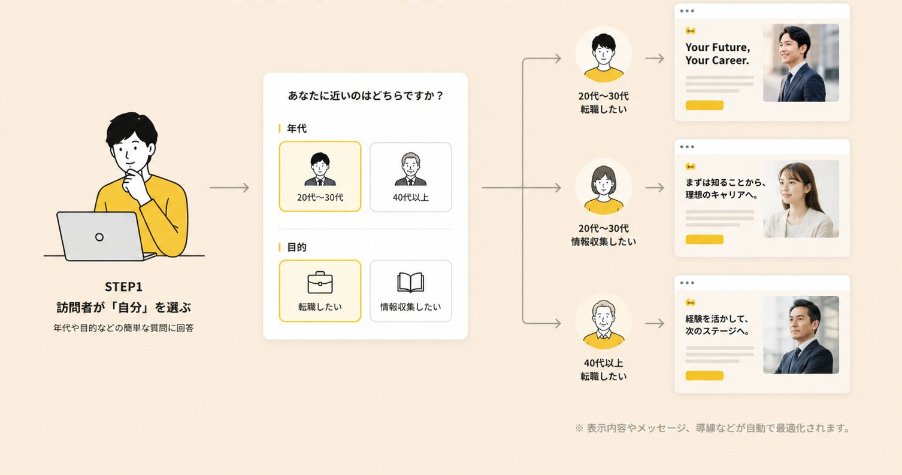
Two faceで切り替えられるデモサイトです。
ターゲットごとに、コンテンツやメッセージが最適化される様子をご覧ください。
※ デモサイトは実際の切り替え機能を体験いただけます。
単身者・ファミリー・投資家など
ターゲット別に切り替わるデモ
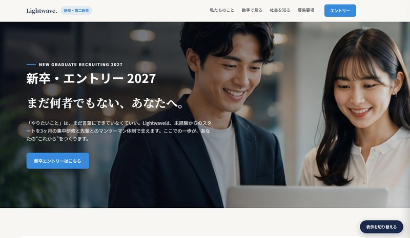
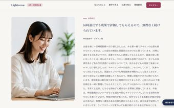
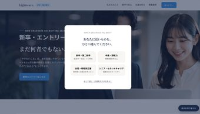
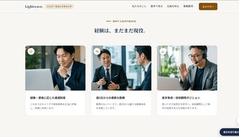
新卒・中途・女性・シニアなど
ターゲット別に切り替わるデモ
20代の予防美容層・40代以降の施術検討層など
ターゲット別に切り替わるデモ
ターゲットによって伝えるべき情報や響く言葉は違います。
Two faceなら、1つのサイトで最適な訴求を実現できます。
個人の相談者（離婚・相続など）
法人の顧問契約検討者
今すぐ助けてほしい個人にも、顧問先を探す法人にも、同じ言葉で語りかけていませんか？
保護者（実績・安心感を重視）
生徒本人（雰囲気・楽しさ重視）
申し込みを決める保護者にも、通い続ける生徒にも、同じ訴求をしていませんか？
ダイエット・体型維持目的
筋トレ・ボディメイク目的
シニアの健康維持・リハビリ目的
痩せたい人にも、鍛えたい人にも、健康維持したい人にも、同じメニューを見せていませんか？
男性（実績・料金を重視）
女性（安心感を重視）
初婚層 vs 再婚層
男性にも女性にも、初婚の人にも再婚を考える人にも、同じプロフィールだけで訴求していませんか？
新築検討者
リフォーム検討者
収益物件オーナー
新築を建てたい人にも、リフォームしたい人にも、収益物件オーナーにも、同じ施工事例を見せていませんか？
ビジネス英語目的
旅行・趣味目的
子ども向け（保護者が決裁）
ビジネスで使いたい人にも、旅行で話したい人にも、子どもに習わせたい保護者にも、同じカリキュラムを見せていませんか？
独身層（医療保険目的）
子育て世帯（生命保険）
シニア層（保障見直し）
独身の人にも、子育て中の家族にも、シニア世代にも、同じ保障内容を勧めていませんか？
入居を検討する本人
決定権を持つ家族
入居するご本人にも、施設を選ぶご家族にも、同じパンフレットのような説明をしていませんか？
転職を考える求職者
採用したい企業
転職したい人にも、採用したい企業にも、同じトップページで語りかけていませんか？
業種やサービスの特性に合わせて、サイトの見せ方・伝え方を最適化。
コンバージョン率の向上・顧客満足度の向上に貢献します。
いいえ、基本的には訪問者ご自身に選んでいただく方式です。属性を決めつけないので、法令やD&Iの観点でも安心です。なお広告経由の流入については、広告ごとにリンクURLを指定しておくことで、遷移元に応じた表示を自動で出し分けることも可能です。
訪問者の選択（またはリンク元の情報）をもとに、同じURL・同じサーバー上で表示するコンテンツを動的に切り替えます。裏側は1つのサイトなので、更新や管理の手間は増えません。
検索エンジンには通常の1サイトとして認識されるよう設計するため、重複コンテンツによる評価低下のリスクを抑えられます。
はい、PC・スマホ・タブレットいずれも同じ仕組みで対応し、レスポンシブデザインで表示されます。
可能です。現行サイトの内容を活かしながら、ターゲット別のパターンを新たに設計し直せます。
ページ数などの規模によりますが、5Pくらいの小規模サイトで1ヶ月が目安です。
可能です。追加ペルソナは1つあたり+10万〜15万円が目安です。
プランに応じて基本の修正回数を設けています。詳細はお見積もり時にご案内します。
インフラ保守（月額3,000円〜）から、分析・改善提案まで行うグロースプラン（月額50,000円〜）まで、選択式でご用意しています。すべて月次解約可なので、必要な分だけ気軽にお使いいただけます。
ページ規模：4画面分の長さ×5P
ペルソナ数：2ペルソナ
ページ規模：4画面分の長さ×10P
ペルソナ数：3ペルソナ
ページ規模：4画面分の長さ×15P〜
ペルソナ数：4ペルソナ以上
公開後の運用もお任せいただけます。日々の保守・運用から、データに基づく改善提案まで、必要な分だけ選んでご利用いただけます。
※ 契約期間の縛りはありません。すべて月次で解約いただけます。
※ 月額契約以外に、都度のご依頼（スポット対応）も可能です。目安：文言差し替え3,000円〜／画像込み5,000円〜（1P・5か所まで）。
まずは現状の課題を
お聞かせください。
貴社のビジネスモデルと
ターゲットに合わせた
「最適なパターンの分け方」
から、
無料でご提案いたします。